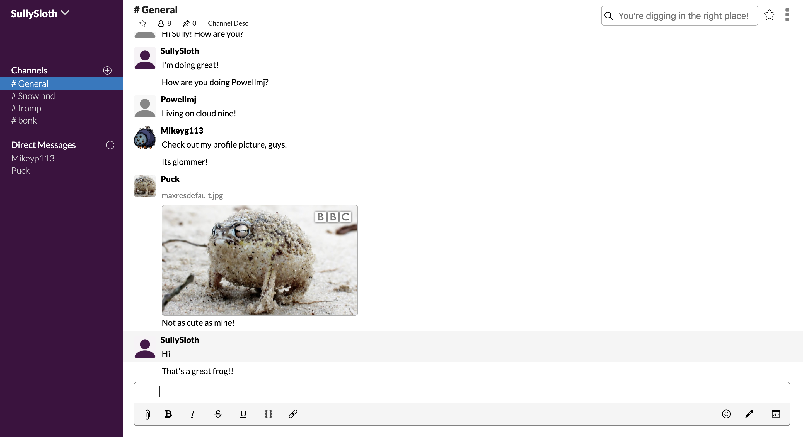
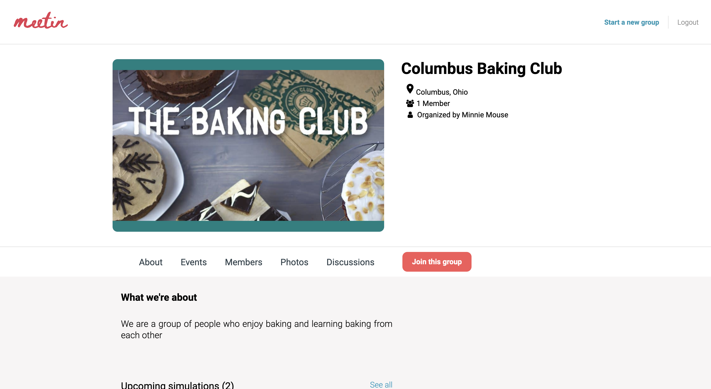
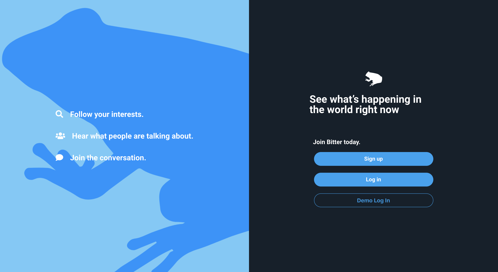
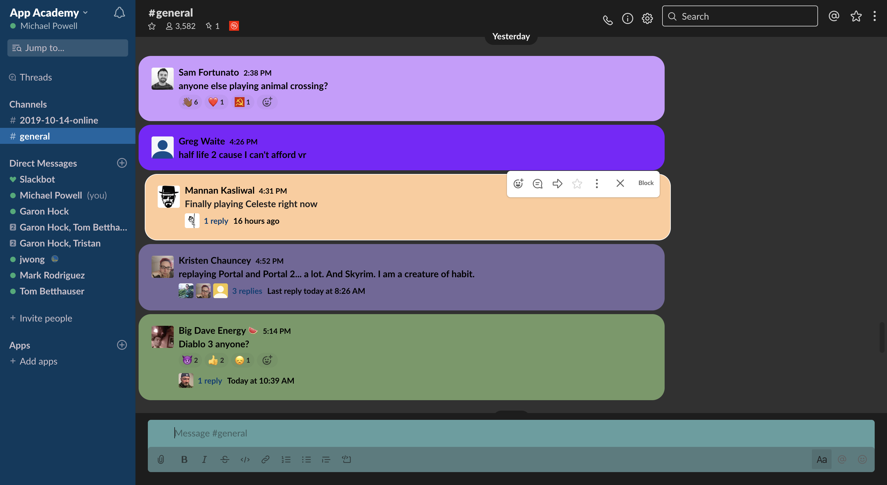

Howdy! I'm Michael, I like long walks on the beach and squashing bugs!
I am a software engineer who loves building full stack applications.
I'm passionate about problem solving, debugging, and writing clean, semantic code.
I’m looking for a fast-paced environment with opportunities to continue learning.
Recent Work

Sloth
Sloth is a messaging app that implements React/Redux, Ruby on Rails, AWS, Draft.js, and Websockets.
Live chat functionality organized by channel/DM group made possible by Action Cable (Websockets).
Draft.js allows text/message formatting.
AWS integration allows users to upload profile pictures and attach files to messages.
Live
Github

Meetin
Meetin is a social media site designed to mimic Meetup, which
was created using a MERN stack (MongoDB, Express, React,
and Node) and uses AWS to save images.
Meetin houses built-from-scratch authentication, employing BCrypt.
Users can create groups with a fluid process that guides the user through the steps.
Groups and events have images stored on a AWS cloud.
Live
Github

Bitter
Bitter is a Twitter clone which was developed using MongoDB, React, Apollo, JavaScript, GraphQL, and AWS
GraphQL provides a single API end-point allowing more efficient querying of the Mongo database.
AWS allows users to upload images as profile pictures, cover images, and attachments to posts.
A react-like modal allows for communication between components through local storage.
Live
Github

CutieFont
CutieFont is a Google Chrome extension that styles Slack using Javascript, CSS, and Chrome Storage Sync.
CutieFont uses mutation observers to detect when React renders new messages, as to reduce the amount of resources the
extension takes up when painting.
Chrome Storage Sync allows CutieFont to save message and user ids with associated color ids, which speeds up painting,
and allows users to block users and ignore messages.
Github
Here are a few of my favorite things:
Get In Touch
Feel free to contact me for job opportunities, collaboration, questions, or just to say hi!
Email me at Gieringmj@gmail.com
or get in touch with me on any of these platforms!
{kind=link}
{kind=link}
{kind=link}
{kind=link}
{kind=link}